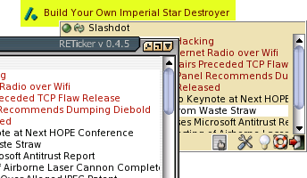

Vorbemerkungen
Der RETicker ist ein Programm zum Anzeigen von News-Messages verschiedenster Quellen. Diese Quellen sollten rss oder rdf formatiert sein, zu den entsprechenden Standards vergleiche auch:http://blogs.law.harvard.edu/tech/rss
http://web.resource.org/rss/1.0/
http://www.w3.org/RDF/
Inhalt
